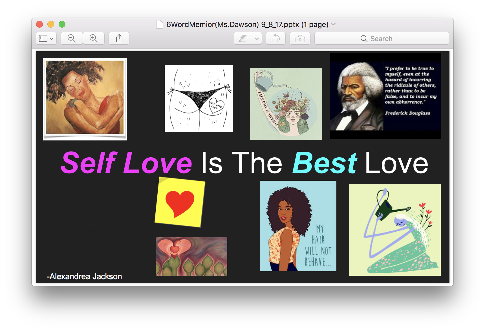

About me
Hello, my name is Alexandrea Jackson. I am a fifthteen year old female from the Bronx, New York. I attend Frederick Douglass academy in Harlem and I attend Code next on Saturdays for team edge as well as tuesdays for Robotics.
Projects
Over several months at Code Next I have created various projects. These topics range from websites, to emojis, to games. These projects included coding using coding languages such as Processing and website development with html. However, one in particular is done outside of the code next lab.- Plankton popsicle Emoji:
-
- Chance Of Color Game:
- Code Next Fanpage:
- Vision board:
- Six Word Memoir:
- 
- hi